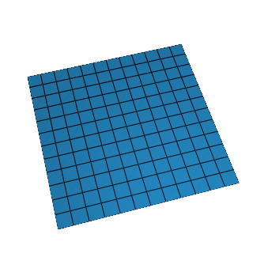
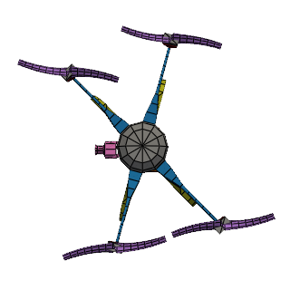

Visual Dynamics
Visual DynamicsDownload
A compiled package for your platform, a Python install, or the repository itself.
This is an alpha release. It has been checked
against known cases, not yet against a broad set of tests; numbers
it produces are to be verified by independent means before anything
depends on them. The application says so when it opens, and asks
for that to be acknowledged every time. The project file,
.vdyn, is provisional: the next alpha will save projects
in the Engineering Sciences Common Data Format (.escdf),
a public standard, and will still open .vdyn files; the
first release that is not an alpha will not. Open each
.vdyn once in that alpha and save it again.
Compiled packages
Nothing to set up — download, open, and the application is on your desktop. This is the one to take unless you already work in Python.
Every release is also on the releases
page, with notes and checksums — SHA256SUMS
beside the files, which shasum -a 256 -c SHA256SUMS
verifies.
Example projects
Something to open on the first day: complete projects, one per workflow, with the report already generated. Every run is synthetic — a virtual test article driven through the same controller the real ones are — and the photographs are renders of the geometry.

The plate six projects · modal, random, shock, sine, system ID, transient · 42 MB
The quadcopter four projects · modal, random, shock, transient · 272 MB
The plate is the data the figures on the Examples
page and the guide's screenshots come from; the quadcopter is the
same workflows on a model the size of a real test article. Unzip,
then File → Open. They are .vdyn files, and are re-cut
when the project file moves to .escdf.
Python installation
The desktop application and the scripting API are one package, so installing it gets you both — the analysis you can drive from a notebook, and the same window the installers above put on your desktop.
pip install visualdynamics
Python 3.12 or newer. python -m visualdynamics opens
the application; import visualdynamics is the API the
documentation
describes.
Contributor installation
To work on it — fix something, try a branch, run the test suite — take the repository and install it in place, so your edits are live without reinstalling:
git clone git@github.com:visualdynamics/visualdynamics.git cd visualdynamics pip install -e .
That is the SSH remote, which uses the key you already push with.
Over HTTPS,
https://github.com/visualdynamics/visualdynamics.git
clones the same thing.
To run what is on main without cloning it — a fix you
have been waiting on, say — pip installs from the repository
directly, and takes @ a branch, tag or commit to pin
one:
pip install git+ssh://git@github.com/visualdynamics/visualdynamics.git
There is nothing to compile; git and a Python 3.12 toolchain are the whole of it. Bug reports are very welcome and I try to fix them promptly — for anything larger, write first.
What you need
- macOS 13 or newer, Apple silicon or Intel — each has its own build above. Unsure which chip? Apple menu → About This Mac.
- Windows 10 or 11, 64-bit.
- Linux with a desktop; the AppImage needs no install — mark it executable and run it.
The 3-D views want a working OpenGL stack, which any ordinary desktop has. Nothing here phones home on its own or needs an account — File → Check for Updates… asks visualdynamics.org only when you ask it to.